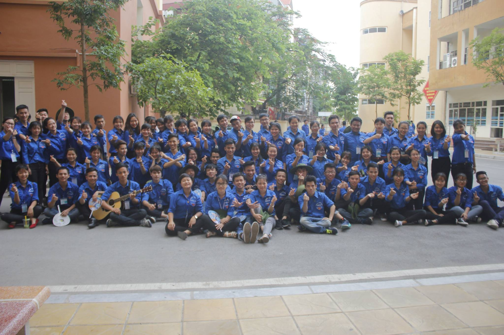
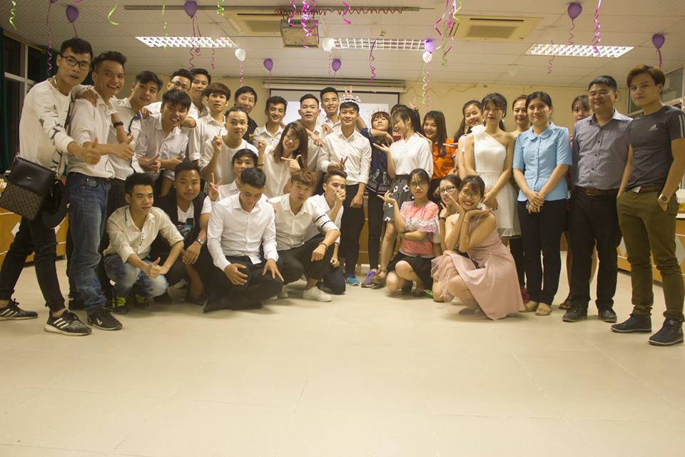
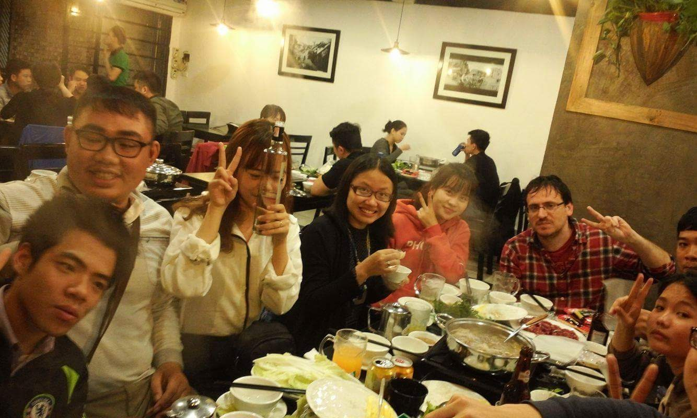
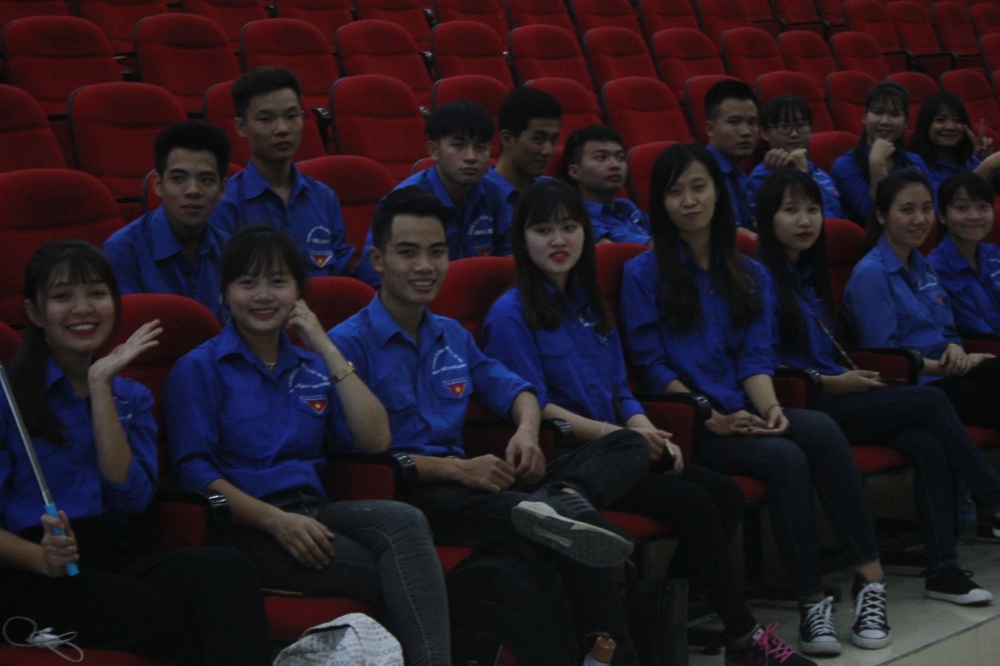
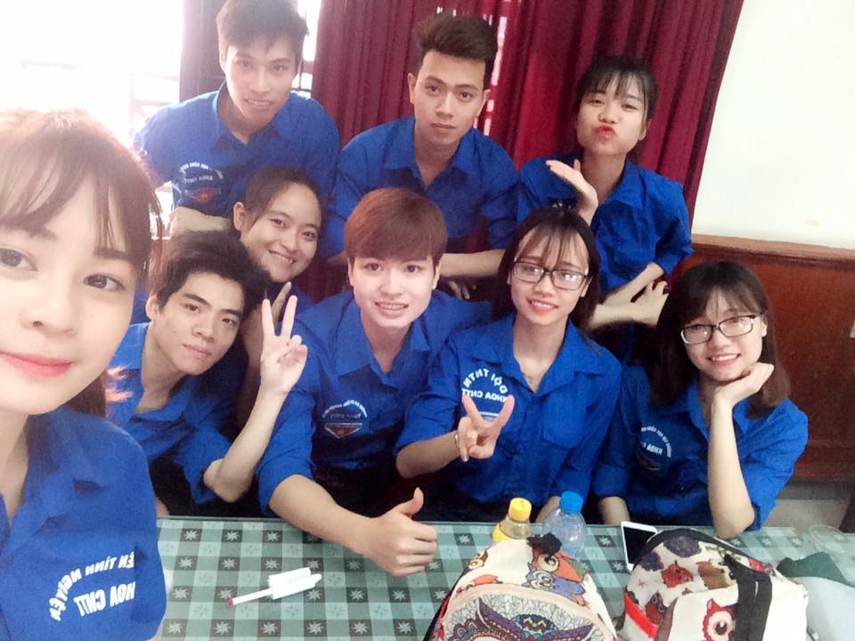
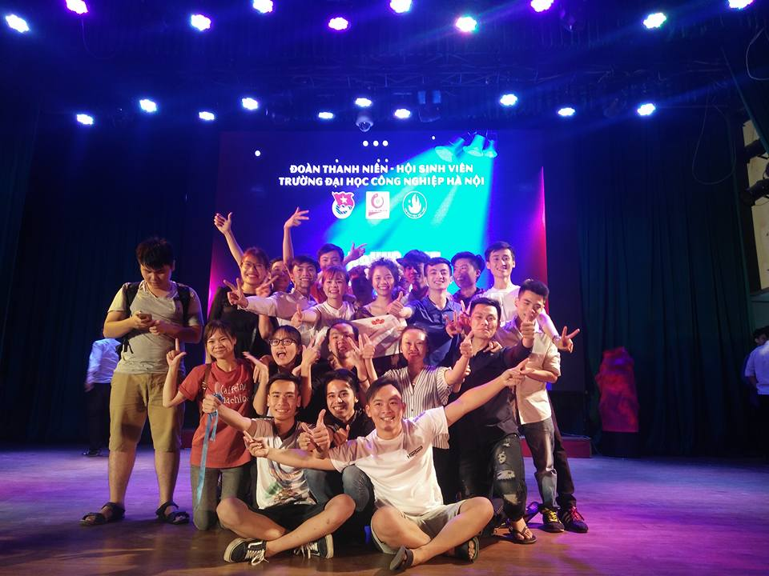

Nếu em xuất hiện sớm hơn thì bài văn tả thiên thần của anh đã không phải nộp giấy trắng rồi
Blog của Akira Phát
Đã bao lâu rồi bạn chưa khoác trên mình màu áo ấy màu xanh tình nguyện . Đã bao lâu rồi bạn không đi chơi đâu đó với đội tình nguyện hoặc với mấy thằng bạn
Tiếp sức mùa thi 2017
Kỷ niệm tiếp sức mùa thi 2017
Sinh nhật IT Support
Sinh nhật đội IT Support
Elight 2017
Khóa học elight 2017.
Nhập học k12
Nhập học khóa 12 tháng 8/2017
Tình thầy trò 2017
Có những cảm xúc đến với ta bất chợt, nhưng nó chưa đủ để làm bạn yêu. Nó như những bong bóng xà phòng: đẹp đẽ, căng tròn, nhiều màu sắc khiến ai cũng để ý... nhưng khi chạm vào thì mọi thứ biến mất vô hình. Có những người cho ta nhiều rung động đầu đời nhưng ta chỉ muốn ngắm nhìn và giữ quan hệ như thế này mãi mãi
Sự kiện khoa CNTT
Thanh xuân là quãng thời gian đầy sóng gió bởi vì lúc ấy chúng ta không biết câu trả lời là gì. Chúng ta không biết bản thân thực sự muốn cái gì, ai thật lòng yêu chúng ta, chúng ta thật lòng yêu ai. Đó là quãng thời gian chúng ta cứ quẩn quanh đây đó, tìm kiếm câu trả lời. Và rồi khi chúng ta bất ngờ biết được câu trả lời. Bất giác chúng ta đã trưởng thành, đã trải qua những lần li biệt khi ít khi nhiều.